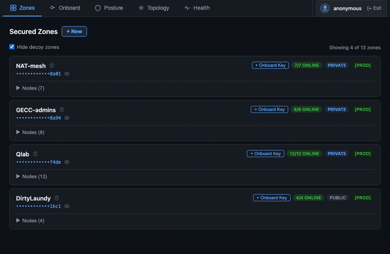
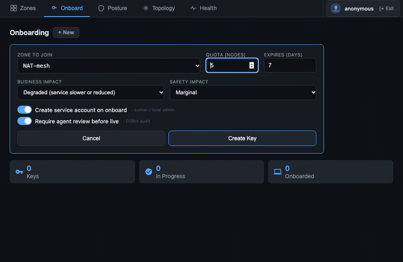
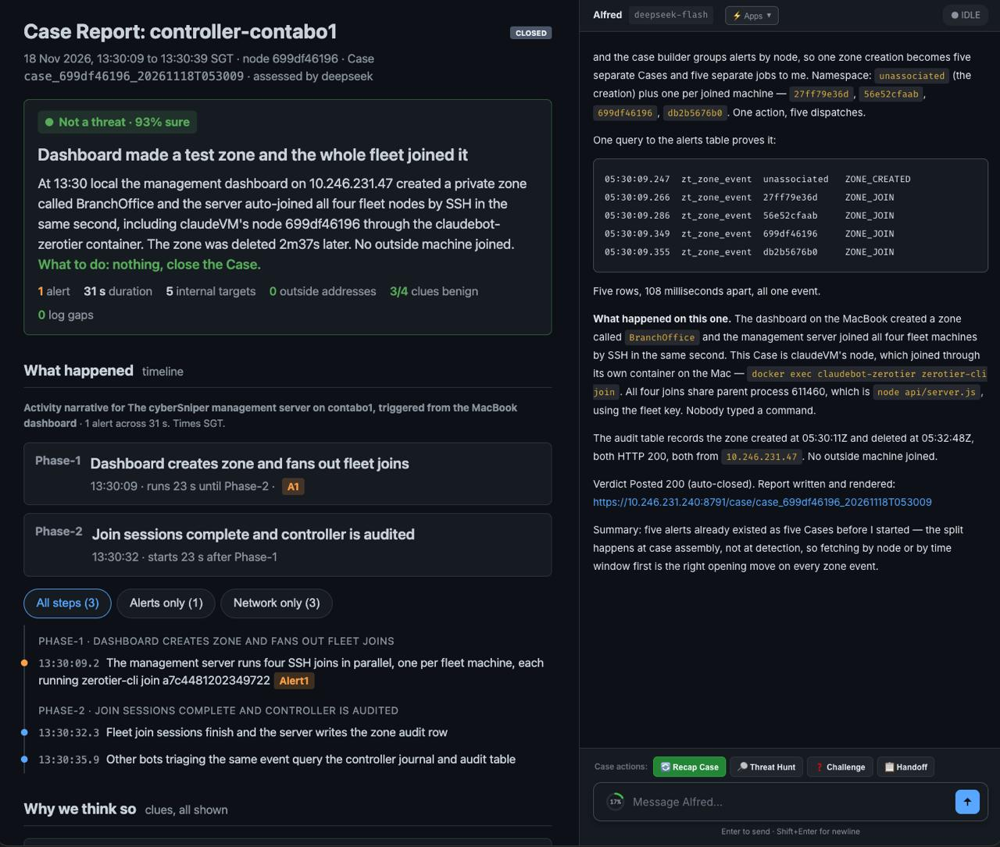
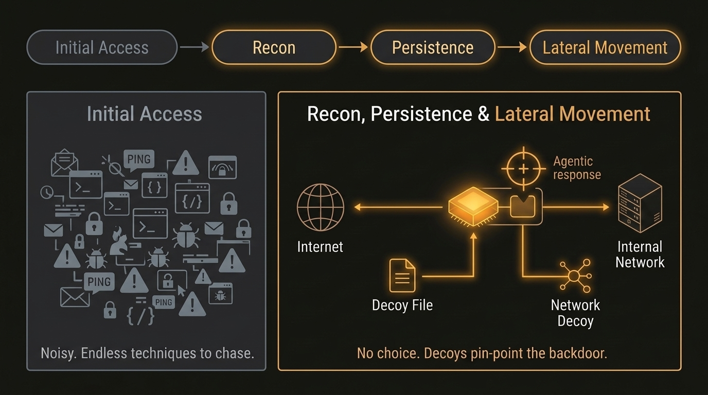
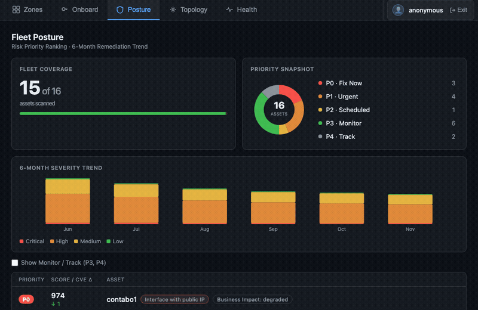
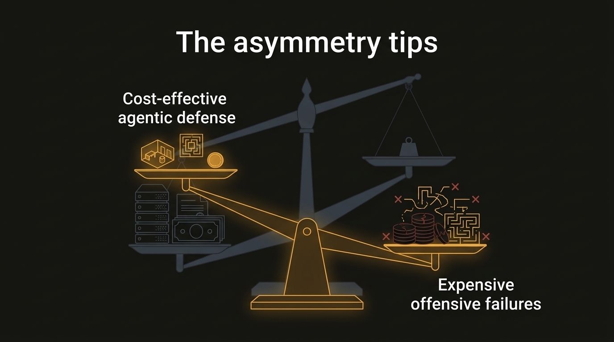

The outcome: an agentic AI SOC that gives me zero-trust network segmentation, audit recording on demand, agentic vulnerability management, and deception for threat response.
I built it all myself on two $20 a month pro plans, one from Anthropic and one from Google, and tuned the agentic skills that run it.
It defends my home lab of Linux, Windows and macOS endpoints. My iPhone and iPad are the admin and response channels.
Day to day, cheap pay-as-you-go Chinese models like DeepSeek and GLM run those skills reliably.
So what is value? Easiest to show by what burns money without it.
1. Flat Networks, or Pricey Ones Still Wide Open
One Big Room
- Flat network: Every device reaches every other device.
- Costly routing: Complex and expensive, yet poor segmentation leaves gaps.
- Liberal port binding: Services listen to anyone who asks.
- One foothold: Get into one machine, reach everything else.
Micro Zones Like Chat Rooms
- Zone in seconds: No new hardware, no routing change.
- Members only: A service is seen only by its zone. Outsiders cannot tell it exists.
- Many small rooms: Each holds only who needs to be there.
- Easy onboarding: A few teammates or a fleet of kiosks, one key each.
Creating a zone should be as easy as creating a group chat. Invite who belongs, and nobody else even knows it exists.

Getting people and machines in is just as easy.
A few teammates? Each pastes one line into their console, press enter, and they are in.
A fleet of managed kiosks? The old way is both complex and expensive: a certificate authority to run, a VPN gateway licensed per device, and someone on site whenever a certificate quietly expires.
Here, the same onboard key goes out silently through your existing device management tool. Every kiosk joins its zone with no certificates, no per-device gateway fees and no site visits.

2. Paying AI to Read the Noise
Token Furnace
- Millions of junk events: Fed to a model every month.
- Bigger bill: A noise problem becomes a cost problem.
Deterministic First, AI Where It Counts
- Free filtering: Highly repetitive audit lines carry little to no security value, so plain rules drop them.
- Few real cases: Only those reach the AI.
- Build, not babysit: AI value went into building sensors, rules and decoys.
Spend the frontier model once to build the system. Let cheap models run it.
Bolting AI onto a legacy SIEM is mostly burning tokens. It is unlikely to find any meaningful signal, for two reasons:
- The sensors may already be blind: Adversarial agents can disarm off-the-shelf sensors, so the logs the AI reads may be missing the very events that matter.
- The attacker blends in: An agent that uses normal tools at normal hours looks just like everyday noise. The AI is searching a haystack that may not even contain the needle.
Mine works the other way round. Whether it is log tampering or a touch on a decoy, at the file layer or the network layer, the signal is rare and it matters.
The agent has all the context and the skills to chase it down in near real time: from the alert, to the exact process that caused it, to the persistence behind it. It then writes a plain-word report with a verdict and what to do next.

3. Hoarding Noisy Audit Logs
Collect Everything
- Ship it all: Every event goes to a central store.
- Pay to keep it: Storage and ingestion bills grow with volume.
- Never read: Almost none of it answers a real question.
The Car Cam Approach
- Always recording, locally: Each endpoint keeps a rolling record, like a car dashcam.
- Smart grouping: Repetitive low-value lines are grouped and filtered before they pile up.
- Pull on anomaly: When something looks wrong, that stretch is pulled and kept for safekeeping.
Like a car cam: always recording, but you only save the clip when something happens.

This is where traditional SOCs fail miserably. Most of the attention goes to the initial intrusion, the first door the attacker walks through.
But once inside, poor network design turns lateral movement into a fog. With every machine able to reach every other, telling an attacker's next hop from normal traffic is very hard.
That is why the pyramid is built the way it is. The broad base of process and network activity is not there to raise alarms. It is the trail.
When a rare signal fires at the tip, a decoy touch or tampering with the audit log, that trail is already sitting on the endpoint. We follow it back through the process and network activity to the exact process, the pivot it made, and the persistent backdoor behind it.
4. Chasing Attack Technique Patterns
Rule Treadmill
- Always behind: Techniques change faster than rules get written.
- Fragile: One tweaked flag and the signature misses.
Watch What Attackers Must Do
- Must move: Segmentation leaves very few legitimate paths.
- Must touch: Decoys sit where no real user goes.
- Any technique: A touch on a decoy is a signal, however it was done.
Do not guess how they will attack. Guard the steps their TTPs have to take.

There are endless ways in, and new ones appear faster than rules. After the break-in, every intruder must look around, settle in and move. Chasing initial access is playing the attacker's game. With cloaked machines, services bound only to private zones, decoy zones and disk canaries, the attacker plays ours: the only open doors are the ones we planted.
An intruder cannot tell a decoy from the real thing without touching it. That is especially true of adversarial AI, which acts confidently on whatever looks real. That is where my deception lives. It is built to trick both adversarial AI and human operators running Agentic Persistent Threats (APT). And it is bespoke, not off the shelf, because advanced, well-funded adversaries can simply buy commercial deception products and reverse engineer them. You cannot buy mine.
A maze that never changes gets learned. Because creating a zone and onboarding into it is so easy, an agent can build and rebuild the maze itself, as easily as showing it an image of the network layout. New decoy zones and endpoints appear at the speed of inference and tool calling, not at the speed of a change request.
The best fight is the one that never starts. Endpoint vaccination, live on Windows today, wins it before the first move, like a police car parked outside a house. Advanced malware checks where it has landed before it acts, because the last place it wants to run is a researcher's analysis lab. So we make every machine look like that lab. The malware takes one look, decides it is being watched, and never runs. We do not need to know the malware to stop it. Read how endpoint vaccination works →
No real user has any reason to go near a decoy. So one touch is all it takes, with no pile of false alarms to sort through. From that single touch, we laser-point straight back to the pivot and the persistence behind it.
The system audit log works the same way. To an intruder with admin rights, it is honey to bees. They cannot resist tampering with it, and that is exactly what gives them away.
How much salary would it take to keep expert threat hunters working every night? Few teams can afford even one. Now agents with the right skills and tools hunt every night, for the price of a token bill.
5. Building Driver Sensors That Get Disarmed Anyway
Complex Sensors, Sitting Ducks
- Driver development: Kernel drivers per OS are costly, fragile and slow to ship.
- Well documented: Off-the-shelf agents come with known ways to switch them off.
- Blinded first: After privilege escalation, the attacker silences them and the console stays green.
Native Audit, Tamper as the Signal
- Use what the OS already has: auditd on Linux, Event Log and Sysmon on Windows, eslogger on macOS.
- Weakness into signal strength: With admin rights, an attacker will tamper with logs. Since that is certain, a stopped, edited or silenced log is a high-confidence sign of intrusion.
Every serious intruder will touch the logs. So the touch itself becomes my most reliable alarm.
A hidden, lightweight custom sensor built on moving target defense keeps native audit switched on, and every high value event is stashed away both on the endpoint and remotely. Tamper with one copy, and the other still tells the story.
Kernel drivers also carry a risk of their own. In July 2024, one faulty CrowdStrike update sent millions of Windows machines into the blue screen of death worldwide. A sensor running that deep can take the whole machine down with it.
So why did everyone build drivers instead of using native audit? In the old days, experienced sysadmins who knew which audit rules to switch on, and what to filter out, were few and far between. Get it wrong, and you drown in noise or go blind.
With agentic AI, that is no longer a problem. I combine two layers:
- Deterministic, profile-based filtering: We never assume a line is good, since even trusted tools get abused as LOLBins. But a line repeated thousands of times a day carries little value, so plain per-endpoint rules filter it out. Fast, free and predictable.
- Agentic review of every filter: Before a filter goes live, an agent checks whether it would hide attack context and leave a monitoring gap.
The expert sysadmin who was rare is now a skill that runs on every endpoint.
The same agentic skills also run vulnerability scanning and track patching for every endpoint. Each finding is ranked by risk and followed until it is fixed, so nothing quietly falls off the list.

The outcome: patching shrinks the two doors attackers love most, exploits on listening ports and privilege escalation. Fewer ways to get admin rights means fewer chances to tamper with the logs at all.
The Asymmetry Tips
Put the five together and the economics flip. For years, defense was the expensive side: more licences, more storage, more analysts, and now a bigger token bill.
ValueMaxxing turns that around. My side runs lean on cheap models and native tools. The attacker now burns time and tokens on decoys, dead ends and tripwires, and every wrong turn gives them away.
